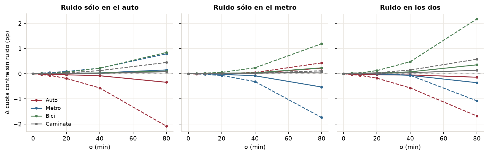
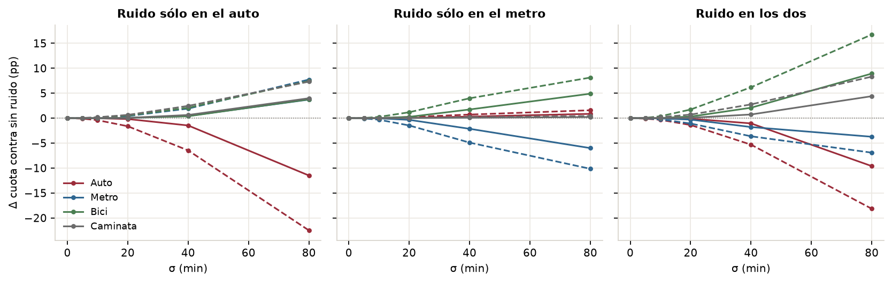
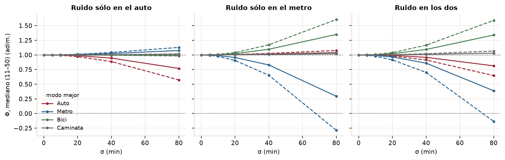
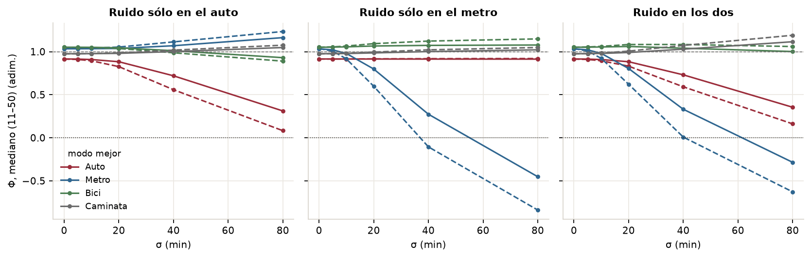

Qué pasa cuando la variabilidad está en unos modos y no en otros — a dónde van los viajes, y quién paga.
E3 pone ruido en todos los modos que la gente aprende. Pero en una ciudad real la variabilidad no se reparte pareja: el auto tiene congestión, el metro tiene su propia irregularidad, y caminar tarda lo que tarda. E4 pregunta qué pasa cuando el ruido está en unos modos y no en otros. Cuatro preguntas, con los del simulador.
P1. ¿A dónde van los viajes que el ruido expulsa? Al modo que no lo tiene. Con = 80 min sólo en el auto, la cuota del auto cae 2,1 puntos y Bici y Caminata reciben buena parte: la bici sola gana 0,8 puntos. La variabilidad no sólo empeora las decisiones: redistribuye viajes, y lo hace hacia donde no hay nada que aprender.
P2. ¿A quién daña? A quien tiene el ruido en su modo mejor, y a nadie más. Con el ruido sólo en el metro, quienes deberían usar el metro quedan en = 0,33; quienes deberían usar la bici, en 1,32 —mejor que sin ruido—. Es la asimetría de E2, pero acá no se impone por diseño: sale sola de quién es cada persona.
P3. ¿Sirve mirar el promedio? No, y E4 lo muestra con un caso incómodo: en esa misma celda el agregado de toda la ciudad vale 1,06 — por encima de 1, o sea «la ciudad elige mejor que con información perfecta». Un promedio que no sólo tranquiliza: miente de signo.
P4. ¿Cuánto depende de la calibración? El tamaño, no el mecanismo. Con los de la literatura (§4) el grupo del metro pasa de 0,33 a −0,78 y la redistribución se multiplica. La §4.4 muestra además por qué en la ciudad esa columna no es una reescala inocua.
La misma mecánica de E3 —36.000 agentes, 250 días, la red cargando y respondiendo cada día— con dos diferencias. La primera: los cuatro modos de la app, con la tenencia de auto por estrato, así que cada persona elige entre los modos que le son factibles y no entre dos. La segunda, que es la pregunta de E4: el ruido va sobre unos modos y no sobre otros.
Tres condiciones:
más un control sin ruido. Cruzadas con 5 niveles — ∈ {5, 10, 20, 40, 80} min— y 3 de memoria — ∈ {0,00, 0,50, 1,28}—, en las dos escalas del logit de la §4.
Tabla 1La ciudad de cuatro modos, día 0
| modo | cuota de equilibrio (%) | puede llevar ruido | se aprende |
|---|---|---|---|
| Auto | 28,25 | sí | sí |
| Metro | 26,11 | sí | sí |
| Bici | 35,79 | no | sí |
| Caminata | 9,85 | no | no |
La configuración de la app tal cual: tenencia de auto por estrato y los cuatro modos. El ruido va sobre el auto y sobre el metro, nunca sobre la bici ni la caminata. Se aprenden auto, metro y bici —la bici se congestiona en la ciclovía—; la caminata no, porque su tiempo es geométrico y no tiene ni congestión ni ruido. Que Bici y Caminata no lleven ruido es el punto del experimento, no una omisión: es lo que permite ver hacia dónde se desplazan los viajes.
Con más de dos modos, el punto de indiferencia de ya no es ½ sino , el reparto uniforme entre los modos factibles de cada persona. Eso importa al leer la tabla 6: donde está cerca de , el denominador es chico y amplifica.
Es el de E3, con modos en vez de dos. Lo repetimos corto para que este informe se lea solo.
Cada persona cree que el modo tarda el promedio ponderado de lo que vivió en ese modo, con los días recientes pesando más y los días en que no lo eligió sin entrar:
es el tiempo que la red entregó ese día en su celda, más su
propio si ese modo lleva ruido en esa condición. El prior
es el tiempo de equilibrio del día 0 (ibl.py:48).
sale del núcleo, así que constantes modales, costo, penalizaciones y factibilidad quedan como las calcula el simulador. La caminata no se aprende: su tiempo es geométrico y vive entero en .
El indicador central generaliza el de E2 al caso de varios modos:
donde es la cuota media del modo que de verdad es mejor para cada
persona y la de quien conoce los tiempos de equilibrio. Con dos
modos = ½ y es la de E2 tal cual. Se calcula en total y, lo que acá
importa, separando a la gente por cuál es su modo mejor
(poblacion.py:262).
Y la brecha entre lo que se cree y lo que se vive, en minutos:
Los dos bienestares están en útiles del núcleo — entra sólo en la ec. (2), no multiplica —, así que es comparable entre escalas con el mismo = −0,0331 útiles/min.
Todo lo que sigue está calculado con los del simulador. Esta sección explica qué son, por qué la literatura de elección repetida sugiere valores bastante mayores, y por qué eso se reporta como sensibilidad y no como corrección.
En un logit sólo se identifica el producto : multiplicar la escala
por un número y dividir los coeficientes por el mismo deja exactamente las
mismas probabilidades. Por eso el logit de transporte del simulador fija
= 1 —titirilquen_core/demand/choice.py:19
calcula a secas, sin ninguna escala— y son los los que la
absorben.
La consecuencia importa: no es una perilla disponible, ya está consumida. Los valen lo que valen porque, con = 1, reproducen una partición modal observada. (El del uso de suelo es otra cosa: ahí sí es un parámetro de escenario, porque fija cuánto pesa el ruido de localizarse frente a una accesibilidad que ya trae su propia escala.)
Guevara, Tang y Gao (2018) estiman un IBL con los datos de laboratorio de ruta de Ben-Elia y Shiftan (2010) —que es casi exactamente el experimento que estos informes simulan— y obtienen:
Tabla 2Guevara, Tang y Gao (2018), tabla 4, dataset completo
| parámetro | d | TIMEF | TIMES | LRISK | FRISKY | CWA |
|---|---|---|---|---|---|---|
| estimación | 1,28 | −0,198 | −0,086 | 0,864 | 0,405 | 5,71 |
| error estándar | 0,137 | 0,015 | 0,013 | 0,144 | 0,12 | 0,192 |
TIMEF multiplica el tiempo percibido de la ruta rápida (su ec. 15), no el real: es el análogo exacto de nuestro tiempo del IBL. TIMES es el de la ruta lenta — son dos coeficientes específicos de alternativa dentro del mismo modelo, no un rango. De acá sale también el d = 1,28 que usamos de referencia, que el paper subraya como estimado y no fijado.
Su coeficiente de tiempo es −0,198 útiles/min contra los −0,0331 del simulador:
Tomar ese número no es «elegir otra escala». Como ya está normalizado, equivale a afirmar que los de transporte del simulador son seis veces chicos — es decir, que la elección modal del modelo es mucho más ruidosa de lo que sería en la realidad. Y eso contradice su calibración, que es lo que fija esos .
Hay además una razón de fondo: la escala del logit no es transferible entre contextos de elección. El dato de Guevara viene de elegir entre dos rutas que difieren sólo en tiempo, en laboratorio, con información en pantalla. Elegir entre auto, metro, bici y caminata en una ciudad real es una decisión con mucha más heterogeneidad no observada — y esa heterogeneidad es precisamente lo que un chico representa. Su valor no es «el verdadero» que el simulador debería copiar.
Por eso los resultados van con los del simulador y las tablas traen una columna « × 6,0» como sensibilidad de calibración: dice cuánto crecería cada efecto si la elección modal fuera tan determinista como sugiere el laboratorio. Cuando un efecto se vea chico, esa columna contesta la pregunta obligada — ¿chico de verdad, o chico porque el modelo elige con demasiado ruido?
En los experimentos de una persona la red está congelada y subir la escala sólo afila la elección. Acá no: el día 0 es el equilibrio que calcula el MSA del núcleo con = 1, y con los multiplicados ese reparto deja de ser un punto fijo. La ciudad se corre sola, sin ningún ruido.
Tabla 3El día 0 deja de ser equilibrio — cuota (%) sin nada de ruido
| modo | día 0 (MSA, μ = 1) | control (simulador) | control (β × 6,0) |
|---|---|---|---|
| Auto | 28,25 | 28,22 | 46,61 |
| Metro | 26,11 | 26,13 | 16,06 |
| Bici | 35,79 | 35,77 | 32,24 |
| Caminata | 9,85 | 9,88 | 5,08 |
Las tres columnas son la misma ciudad, sin ningún ruido. Con μ = 1 la dinámica se queda donde el MSA la dejó —es el control de que todo está bien conectado—. Con los β de la literatura el auto salta 18,4 puntos el primer día y se asienta ahí: el logit más afilado concentra la demanda y la congestión acomoda el resto. Por eso Φ del control vale 0,956 y no 1.
Es la forma más directa de ver lo de la §4.1: los estaban calibrados para reproducir esa partición, así que multiplicarlos la rompe. De ahí dos reglas de lectura: la línea base es el control sin ruido de cada columna, y los no se comparan entre columnas en valor absoluto —lo comparable es cuánto cae cada uno al subir .
Tabla 4A dónde van los viajes — cambio de cuota (pp) con σ = 80 min, d = 1,28
| ruido | Auto | Metro | Bici | Caminata | ||||
|---|---|---|---|---|---|---|---|---|
| simulador | β × 6,0 | simulador | β × 6,0 | simulador | β × 6,0 | simulador | β × 6,0 | |
| sólo en el auto | −2,09 | −22,50 | +0,79 | +7,74 | +0,85 | +7,44 | +0,45 | +7,32 |
| sólo en el metro | +0,43 | +1,59 | −1,74 | −10,15 | +1,19 | +8,14 | +0,12 | +0,43 |
| en el auto y en el metro | −1,68 | −18,17 | −1,08 | −6,91 | +2,18 | +16,76 | +0,58 | +8,32 |
Contra el control sin ruido, cuya partición es: Auto 28,22 % Metro 26,13 % Bici 35,77 % Caminata 9,88 %. El patrón es el mismo en las dos escalas y más fuerte en la de Guevara: el modo que lleva ruido pierde y Bici y Caminata, que nunca lo llevan, ganan. No es que la bici se haya vuelto mejor: es que dejó de competir contra algo que la gente puede evaluar bien.


Tabla 5Φ agregado de la ciudad, d = 1,28
| ruido | σ (min) | días 1–10 | días 11–50 | días 51–250 | |||
|---|---|---|---|---|---|---|---|
| simulador | β × 6,0 | simulador | β × 6,0 | simulador | β × 6,0 | ||
| sin ruido | 0 | 1,000 | 0,961 | 1,000 | 0,956 | 1,000 | 0,956 |
| sólo en el auto | 5 | 0,999 | 0,955 | 0,999 | 0,952 | 0,999 | 0,954 |
| sólo en el auto | 10 | 0,995 | 0,937 | 0,995 | 0,941 | 0,997 | 0,947 |
| sólo en el auto | 20 | 0,979 | 0,865 | 0,980 | 0,895 | 0,989 | 0,919 |
| sólo en el auto | 40 | 0,920 | 0,693 | 0,920 | 0,709 | 0,958 | 0,801 |
| sólo en el auto | 80 | 0,775 | 0,503 | 0,695 | 0,377 | 0,838 | 0,450 |
| sólo en el metro | 5 | 1,000 | 0,956 | 1,001 | 0,954 | 1,000 | 0,955 |
| sólo en el metro | 10 | 1,000 | 0,945 | 1,002 | 0,950 | 1,000 | 0,953 |
| sólo en el metro | 20 | 0,997 | 0,917 | 1,008 | 0,931 | 1,001 | 0,951 |
| sólo en el metro | 40 | 0,989 | 0,875 | 1,030 | 0,883 | 1,009 | 0,926 |
| sólo en el metro | 80 | 0,973 | 0,843 | 1,091 | 0,831 | 1,060 | 0,868 |
| en el auto y en el metro | 5 | 0,999 | 0,950 | 0,999 | 0,951 | 0,999 | 0,952 |
| en el auto y en el metro | 10 | 0,995 | 0,921 | 0,997 | 0,935 | 0,997 | 0,944 |
| en el auto y en el metro | 20 | 0,976 | 0,823 | 0,988 | 0,874 | 0,990 | 0,916 |
| en el auto y en el metro | 40 | 0,911 | 0,618 | 0,951 | 0,665 | 0,966 | 0,790 |
| en el auto y en el metro | 80 | 0,759 | 0,400 | 0,787 | 0,320 | 0,892 | 0,450 |
Promedio sobre toda la población, ec. (3). La primera fila es el control sin ruido: el impacto del ruido es la caída respecto de ella, no el nivel. Con los β de la literatura ese control ya vale 0,956 por el reequilibrio de la §4.1, no por el ruido. Ojo con los valores por encima de 1: no son un error, significan que la ciudad en conjunto elige su modo mejor más seguido que con información perfecta. La tabla 6 muestra lo que ese promedio esconde.
Tabla 6Quién paga — Φ a largo plazo según cuál es su modo mejor (σ = 80 min, d = 1,28)
| ruido | su modo mejor | ¿lleva ruido? | personas | P* (simulador) | 1/J | Φ (simulador) | Φ (β × 6,0) |
|---|---|---|---|---|---|---|---|
| sin ruido | Auto | no | 18.696 | 0,520 | 0,309 | 1,000 | 0,914 |
| sin ruido | Metro | no | 4.966 | 0,546 | 0,477 | 1,000 | 1,041 |
| sin ruido | Bici | no | 10.812 | 0,552 | 0,456 | 1,000 | 1,051 |
| sin ruido | Caminata | no | 1.526 | 0,552 | 0,483 | 1,000 | 0,974 |
| sólo en el auto | Auto | sí | 18.696 | 0,520 | 0,309 | 0,774 | 0,180 |
| sólo en el auto | Metro | no | 4.966 | 0,546 | 0,477 | 1,074 | 1,241 |
| sólo en el auto | Bici | no | 10.812 | 0,552 | 0,456 | 0,989 | 0,917 |
| sólo en el auto | Caminata | no | 1.526 | 0,552 | 0,483 | 1,010 | 1,066 |
| sólo en el metro | Auto | no | 18.696 | 0,520 | 0,309 | 1,056 | 0,935 |
| sólo en el metro | Metro | sí | 4.966 | 0,546 | 0,477 | 0,332 | −0,777 |
| sólo en el metro | Bici | no | 10.812 | 0,552 | 0,456 | 1,316 | 1,246 |
| sólo en el metro | Caminata | no | 1.526 | 0,552 | 0,483 | 1,028 | 1,067 |
| en el auto y en el metro | Auto | sí | 18.696 | 0,520 | 0,309 | 0,823 | 0,300 |
| en el auto y en el metro | Metro | sí | 4.966 | 0,546 | 0,477 | 0,403 | −0,506 |
| en el auto y en el metro | Bici | no | 10.812 | 0,552 | 0,456 | 1,302 | 1,180 |
| en el auto y en el metro | Caminata | no | 1.526 | 0,552 | 0,483 | 1,041 | 1,197 |
Ésta es la tabla del informe. El primer bloque es el control sin ruido: contra él se lee todo lo demás. La columna «¿lleva ruido?» dice si la variabilidad cayó sobre el modo que a esa persona le convenía. Donde dice sí, Φ se hunde; donde dice no, se queda en 1 o lo pasa. Es la asimetría de E2 —«ruido sólo en el mejor» contra «sólo en el peor»— pero acá no se impuso por diseño: cada persona cae de un lado o del otro según quién es. P* y 1/J están para leer con cuidado los grupos donde el denominador de la ec. (3) es chico.


Tabla 7Dependencia de la trayectoria y error de percepción, d = 1,28
| ruido | σ (min) | dispersión entre iguales, R | B: se cree mejor por (min/viaje) | ||
|---|---|---|---|---|---|
| simulador | β × 6,0 | simulador | β × 6,0 | ||
| sin ruido | 0 | 0,98 | 0,99 | −0,00 | −0,00 |
| sólo en el auto | 5 | 0,99 | 1,02 | 0,01 | 0,02 |
| sólo en el auto | 10 | 1,00 | 1,11 | 0,05 | 0,08 |
| sólo en el auto | 20 | 1,03 | 1,43 | 0,20 | 0,29 |
| sólo en el auto | 40 | 1,14 | 3,17 | 0,78 | 0,98 |
| sólo en el auto | 80 | 1,52 | 6,85 | 2,59 | 2,17 |
| sólo en el metro | 5 | 0,99 | 1,10 | 0,02 | 0,04 |
| sólo en el metro | 10 | 1,00 | 1,36 | 0,08 | 0,14 |
| sólo en el metro | 20 | 1,04 | 2,07 | 0,30 | 0,38 |
| sólo en el metro | 40 | 1,16 | 3,58 | 1,09 | 0,75 |
| sólo en el metro | 80 | 1,54 | 4,54 | 3,28 | 1,09 |
| en el auto y en el metro | 5 | 0,99 | 1,13 | 0,03 | 0,06 |
| en el auto y en el metro | 10 | 1,01 | 1,46 | 0,13 | 0,22 |
| en el auto y en el metro | 20 | 1,08 | 2,39 | 0,50 | 0,66 |
| en el auto y en el metro | 40 | 1,31 | 4,91 | 1,85 | 1,79 |
| en el auto y en el metro | 80 | 2,01 | 9,06 | 5,87 | 3,64 |
La primera fila es el control sin ruido. R = 1 significa que personas idénticas —mismo estrato, celda y tenencia de auto— se comportan como si tiraran la misma moneda; más de 1, que la historia las diferenció. B es la ec. (4). Los dos indicadores se definen igual que en E3, así que los informes se pueden comparar.
La tabla 4 dice algo simple y poco intuitivo: el ruido no sólo empeora las decisiones, mueve demanda. Y la mueve hacia donde no hay nada que aprender. La bici no mejoró en absoluto —su tiempo es el mismo— pero gana 0,85 pp cuando el ruido está en el auto y 1,19 pp cuando está en el metro.
El mecanismo es la ec. (1) otra vez. Un modo con ruido genera creencias dispersas y, por la concavidad del logit arriba del punto de indiferencia, la dispersión empuja la elección hacia el reparto uniforme; un modo sin ruido mantiene su creencia clavada en el valor correcto. Con el tiempo, lo predecible le gana a lo bueno-pero-incierto.
Para política pública la lectura es directa: la confiabilidad es un atributo del modo, no un detalle operativo. Un metro que mejora su tiempo medio pero sigue siendo irregular puede perder viajes frente a una alternativa peor en promedio y predecible.
Con el ruido sólo en el metro, el agregado de la ciudad pasa de 1,00 sin ruido a 1,06: sube. Leído solo, ese número dice que la ciudad elige su modo mejor más seguido que con información perfecta. Debajo conviven 4.966 personas cuyo modo mejor es el metro, en = 0,33, y 10.812 cuyo modo mejor es la bici, en 1,32.
Los segundos «mejoran» por una razón que no tiene nada de buena: el ruido degradó a su competidor, así que eligen más seguido lo que de todos modos les convenía. El promedio suma esa ganancia espuria con la pérdida real de los primeros y da un número no sólo tranquilizador sino de signo equivocado. Un indicador agregado que sube mientras un grupo identificable cae a 0,33 no sirve para evaluar nada.
Esto es la contracara del hallazgo de E3. Allá el agregado escondía rotación individual con signos que se cancelaban; acá esconde una redistribución entre grupos. En los dos casos la conclusión es la misma: la partición modal y los promedios de ciudad son las variables que peor informan sobre este fenómeno.
En E2 «ruido sólo en el mejor» y «ruido sólo en el peor» eran dos condiciones construidas a mano para aislar el mecanismo. Acá hay una sola condición física —el ruido está en tal modo— y la población se parte sola: quien tiene ese modo como mejor queda en el lado malo de la asimetría, quien lo tiene como peor, en el bueno.
Ésa es la razón por la que E4 vale la pena aunque el mecanismo ya se conociera: en una ciudad, «a quién le toca» no es una condición experimental, es la distribución de orígenes, destinos y tenencia de auto. Con el ruido en el auto, los 18.696 agentes cuyo modo mejor es el auto quedan en 0,77; los otros, en 1 o por encima.
Con los del simulador; el punto 5 dice qué cambia si fueran los de la literatura.
papers/2018 Guevara Tang Gao TRB.pdf: la tabla 2 es su tabla 4,
dataset completo.cd sandbox/ibl-dia-a-dia
uv sync --extra dev --reinstall-package titirilquen-core # el núcleo del repo, no uno cacheado
uv run python poblacion.py ciudad # → salida/ciudad4.json
uv run python poblacion.py ciudad --guevara # → salida/ciudad4-guevara.json
uv run python figuras_experimentos.py
uv run python figuras_experimentos.py --guevara
uv run python informe_e4.py
node ../../tools/renderiza_ecuaciones.js